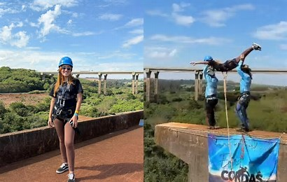

SEGURANÇA
Jovem morre após ser lançada sem corda em salto de rope jump em Limeira (SP)
Passe o mouse para verificar esta informação.
Atualizado hoje
✔ VERDADEIRA
O caso aconteceu durante uma atividade de rope jump. A vítima foi lançada sem estar presa corretamente ao equipamento de segurança.